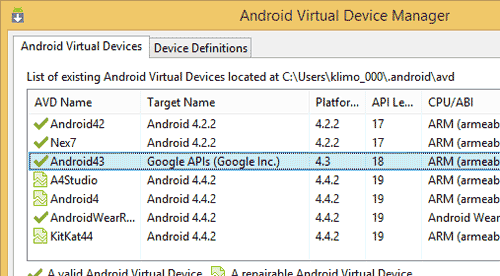
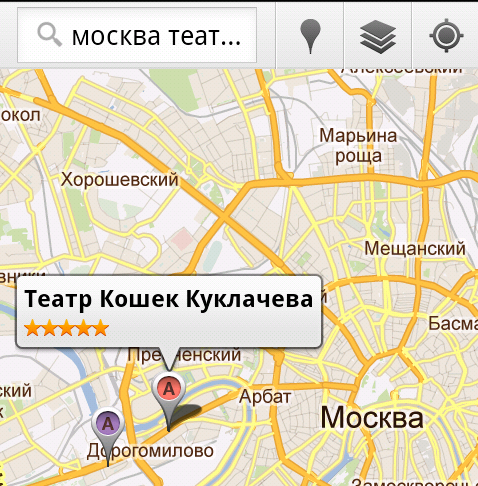
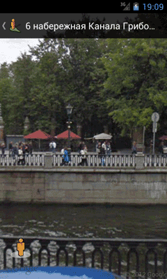

/* Моя кошка замечательно разбирается в программировании. Стоит мне объяснить проблему ей - и все становится ясно. */
John Robbins, Debugging Applications, Microsoft Press, 2000

/* Моя кошка замечательно разбирается в программировании. Стоит мне объяснить проблему ей - и все становится ясно. */
John Robbins, Debugging Applications, Microsoft Press, 2000
Запуск приложения для работы с картами при помощи намерения
На большинстве стандартных телефонов и планшетов есть программа Карты Google. Мы можем из своего приложения запустить эту программу с различными настройками.
Если вы будете тестировать примеры на эмуляторе, то вам необходимо использовать виртуальное устройство с поддержкой Google APIs.

Запускается программа стандартным способом через намерение. Допустим, у нас есть кнопка и код для щелчка будет следующим:
public void onClick(View view) {
String geoUriString = "geo:0,10?z=2";
Uri geoUri = Uri.parse(geoUriString);
Intent map = new Intent(Intent.ACTION_VIEW, geoUri);
startActivity(map);
}
Приложение Карты Google понимает специальный формат:
geo:latitude,longitude geo:latitude,longitude?z=zoom
Первая строчка принимает два параметра: широту и долготу. Вторая строчка дополнительно имеет параметр масштабирования от 2 до 23 (2 - четверть планеты, 23 - максимальное приближение, например, крыша дома, на которой встречаются коты и кошки).
В нашем примере для широты использовалось значение 0 - это экватор. Про долготу рассказывать не буду - не надо было в школе прогуливать уроки географии.
Имея нужные данные и зная необходимый формат, мы можем сформировать задание на запуск приложения для работы с картами. Как правило, на Android-телефонах это программа Карты (Maps). Если у вас на телефоне установлены и другие карты (Яндекс.Карты, iGo), то сначала появится диалоговое окно, где пользователю будет предложено выбрать в каком приложении должна быть показана заданная точка.
String geoURI = "geo:55.869555,37.503964?z=15";
Uri geo = Uri.parse(geoURI);
Intent geoMap = new Intent(Intent.ACTION_VIEW, geo);
startActivity(geoMap);
или так
String geoUri = String.format("geo:%s,%s?z=15", Double.toString(lat), Double.toString(lng));
Intent geoMap = new Intent(Intent.ACTION_VIEW, Uri.parse(geoUri));
startActivity(geoMap);
Запустив приложение и нажав на кнопку, который отвечает за данный код, мы запустим приложение, отвечающее за карты, и окажемся в нужном месте где-то в районе Ховрино (Москва).
Говорят, коты имеют встроенный GPS и им легко разобраться в координатах. Недаром они так ловко находят дорогу домой, даже если их потеряли за сотни километров. Но мы с вами такими способностями не обладаем и точно сказать координаты своего дома не можем.
Впрочем, совсем не обязательно знать точные координаты местоположения объекта. Можно поступить проще. Существует еще один формат:
geo:0,0?q=my+street+address
В этом случае мы можем не указывать координаты, а просто попросить у карт найти такую-то точку. Предположим, мы решили найти Бельгию и с перепугу дали запрос на французском языке:
String geoUriString = "geo:0,0?q=Belgium";
// остальной код без изменений
Карты достаточно умны, чтобы понять ваш запрос и покажет территорию Бельгии. Впрочем, на русском он тоже понимает. Как видите, в этом случае мы передаём нулевые координаты и добавляем к ним запрос ?q=.
Также можно указать и уровень масштабирования:
String geoUriString = "geo:0,0?q=Кот Д'Ивуар&z=8";
Хотите увидеть Париж и умереть? Можете попросить показать кофейни рядом с Парижем.
geo:0,0?q=Coffee Shops near Paris, France
Впрочем, хватит писать на заморском языке. Давайте лучше поищем какой-нибудь театр кошек в Москве:
String geoUriString = "geo:0,0?q=москва+театр+кошек&z=8";
Запускаем приложение и видим нужное место. Удобно, не правда ли?

Кроме карт, у Google есть еще одно приложение Просмотр улиц (StreetView), интегрированное в Карты. Запуск программы ничем не отличается от запуска карт, только нужно использовать другой формат:
public void onClick(View view) {
String geoUriString = "google.streetview:cbll=59.939448,30.328264&cbp=1,99.56,,1,2.0&mz=19";
Uri geoUri = Uri.parse(geoUriString);
Intent map = new Intent(Intent.ACTION_VIEW, geoUri);
startActivity(map);
}
По этим параметрам выводится набережная канала Грибоедова в Питере.

Сам формат выглядит следующим образом:
google.streetview:cbll=lat,lng&cbp=1,yaw,,pitch,zoom&mz=mapZoom
Также можно внедрить карты в своё приложение. Но это уже совсем другая история.